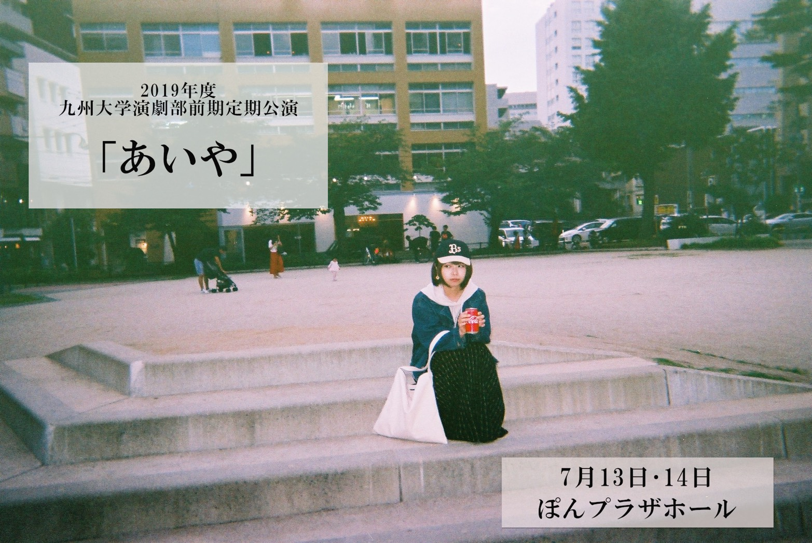

あらすじ
どこか寂しい生活を送る芸大生森島の前に変人、戸田が現れる。
戸田は森島に社会派ポルノを撮ることを提案する。
それは、非行少年、不良少女の悲しみを題材に、
世の闇を暴かんとするリーク的なコンテンツだった。
はじめは抵抗があったモリシだが、だんだんとポルノ作りに没頭していく。
一方、十歳の少年善太は舞台女優の母親からの暴力に遭っていた。
誰にも助けを求められないでいた善太は母の失墜を目論み、
森島達の計画に加担する……
どこか寂しい生活を送る芸大生森島の前に変人、戸田が現れる。
戸田は森島に社会派ポルノを撮ることを提案する。
それは、非行少年、不良少女の悲しみを題材に、
世の闇を暴かんとするリーク的なコンテンツだった。
はじめは抵抗があったモリシだが、だんだんとポルノ作りに没頭していく。
一方、十歳の少年善太は舞台女優の母親からの暴力に遭っていた。
誰にも助けを求められないでいた善太は母の失墜を目論み、
森島達の計画に加担する……
19:00~
13:00~
16:30~
※開場は開演の30分前となっております。
こんにちは！装置班です。
主に舞台で使う大道具を作っています。
セットもなかなか面白い物になりそうです!
是非期待してください!
照明班の仕事は、その名の通り明かりを作ること！
どんな照明効果をつくるかプランを立てたり
実際に照明機材を設置したり
役者の演技や舞台を際立たせるには
無くてはならない存在です!
今回の公演の見どころは
ただ暗転・明転を繰り返すだけでなく
動きのある照明を作る予定です
是非光の変化にも注目しながら観劇してください!
効果音、BGMを集めて流し、
舞台のリアルさを増す係です。
衣装は役者の衣装や髪型
メイク等を考えるお仕事です
今回の公演では、こだわり強めな衣装たちが揃ってます!
どこがこだわりポイントかな～？？
とか考えながらみるのもアリかも(*'▽')
ポチパ班はポスターやチラシ
パンフレット等を作ってます‼
今回のチラシはこちら✨
パンフレットもお楽しみに🎫🔖

宣伝活動は制作班にお任せ!
あらゆる媒体を駆使して
公演情報を皆さまの元にお届けします。
ちなみにTwitterの中の人も私たちです。
ぽんプラザホール
〒812-0038
福岡県福岡市博多区祇園町 8-3